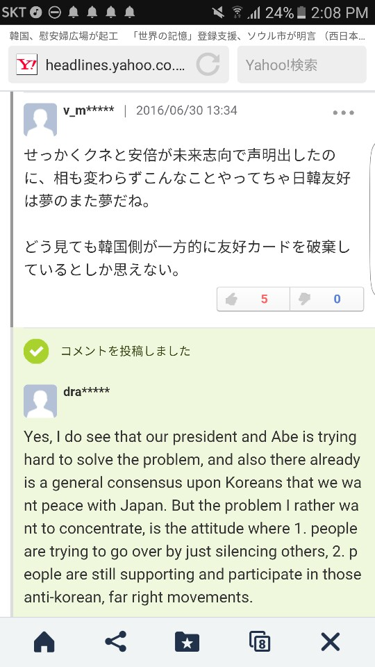
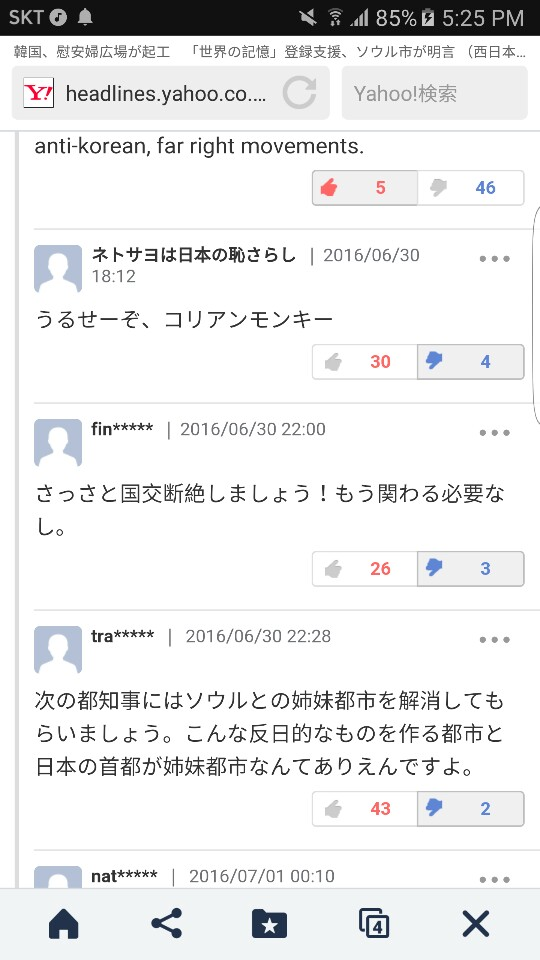
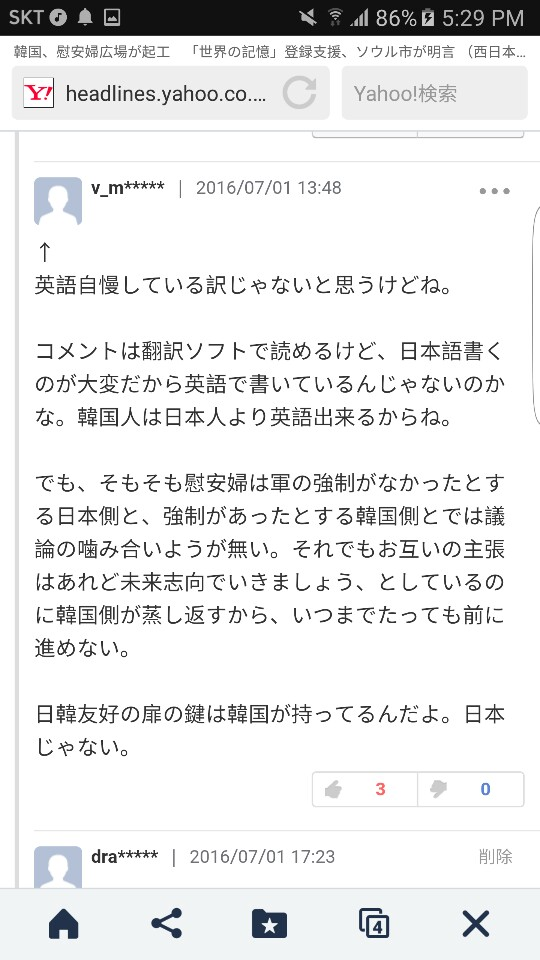

욱일기 게양을 둘러싼 이슈
들어가기에 앞서, 이 글은 원래 #Gibberish 13이 될 예정이었으나 굉장히 무겁고 심각한 주제를 다루고 있기 때문에 Gibberish라고 명시하지 않았다. 다만 카운팅은 그대로 #Gibberish 13으로 하겠다. 다음 Gibberish 글은 14번째가 된다는 이야기이다.
Kazuya Channel이라는 일본 유투브 채널이 있다. 최근 일본 국내외 이슈들을 다루는 영상들을 올리는데, 구독자 수는 57만 명이고 조회 수는 많으면 30만까지 올라가는 중형급 채널이다.
처음 이 채널을 접하게 된 것은 일본의 어느 정치적 이슈에 대한 영상을 다룬 영상이 (아마 아베의 森友学園 비리에 대한 영상이었던 것 같다) 유투브 재팬 급상승 영상 페이지에서 봤을 때였다. 그때 이후로 이 사람의 영상을 간간히 봐왔는데, 얼마 지나지 않아 이 채널에 엄청난 회의감이 들었다. 조금 과장을 보태 모든 영상들이 전형적인 일본 중도 우익~우익의 관점에서 朝日新聞 (아사히 신문)과 한국, 가끔 중국을 까는데 바쁘더라. 물론 이성적인 관점으로 영상들을 보려고 노력하는 필자지만, 필자도 한국인이기 때문에 툭하면 아사히 신문을 까고 한국을 까는게 감정적으로 정말 화가 날 수 밖에 없다. 글은 중립적으로 쓰려 노력하겠다.
먼저, 이 영상의 내용을 다루기 전에 욱일기 자체의 이슈에 대해서 말해보고 싶다. “욱일기는 한국인에게는 정말 고통스러운 기억이 담긴 상징인데, 아무리 공식적인 군함기라지만 욱일기를 달고 한국에 오는 것은 너무 몰상식한 거 아니야? 최소한의 배려라도 해 주어야지.”라고들 많이 이야기한다. 그리고 이는 전혀 틀린 생각이 아니다. 오히려 무릇 한국인이라면 이 생각이 드는 것이 당연하고, 필자도 예외는 아니었다. 물론 우리는 제국주의의 피해국 국민인만큼, 일본의 '상식'적인 수준에서의 '배려', 즉 한국에서는 욱일기를 게양하지 않는 것을 기대할 권리가 있다. 하지만 동시에, 그들이 우리의 상식에 따라 행동해주지 않았다고 해서 비판할 수는 없다고 본다. 이 부분에 있어서는 우리의 생각과 관련 없이 일본 측이 충분히 법적 정당성을 가지기 때문이다.
1998년과 2008년 당시 한국에서 국제관함식이 개최되었을 때에도 이미 일본 해상자위대는 군함에 욱일기를 게양한 채로 입항하여 행사에 참여했었다. 당시에도 논란이 아예 없던 것은 아니었지만 지금까지 계속 별 탈 없이 행사에 참가해왔던 일본 측은 꽤 당황했을 가능성이 크다. 정당성을 뒷받침할 법적 근거도 있다. 1982년 채택되어 한국과 일본 모두 비준한 ‘United Nations Convention on the Law of the Sea (UNCLOS), 국제 해양법’ 제 29조에서는 한 국가의 해상 군대 소속 ‘군함’은 ‘소속 국적을 상징하는 외부 표지’를 달아야 한다고 규정하고 있다. 즉, ‘소속 국적을 상징하는 외부 표지’가 없다면 ‘군함’이 아니라는 이야기이다. 일본 자위대법(自衛隊法) 제 4조에서는 욱일기를 일본 해상 자위대의 정당한 '외부 표시', 즉 군기로 정의하고 있으며 제 102조에서 그 사용을 규정하고 있다. 다음은 위에서 언급한 법/규정들의 원문이다:
UNCLOS
Article 29
For the purposes of this Convention, "warship" means a ship belonging to the armed forces of a State bearing the external marks distinguishing such ships of its nationality, under the command of an officer duly commissioned by the government of the State and whose name appears in the appropriate service list or its equivalent, and manned by a crew which is under regular armed forces discipline.
自衛隊法 平成三十年六月二十七日公布（平成三十年法律第六十七号）改正
第四条
内閣総理大臣は、政令で定めるところにより、自衛隊旗又は自衛艦旗を自衛隊の部隊又は自衛艦に交付する。
２ 前項の自衛隊旗及び自衛艦旗の制式は、政令で定める。
第百二条
自衛艦その他の自衛隊の使用する船舶は、防衛大臣の定めるところにより、国旗及び第四条第一項の規定により交付された自衛艦旗その他の旗を掲げなければならない。
２ 自衛隊の使用する航空機は、自衛隊の航空機であることを明らかに識別することができるような標識を付さなければならない。
３ 自衛艦その他の自衛隊の使用する船舶又は自衛隊の使用する航空機以外の船舶又は航空機は、第一項に規定する旗若しくは前項に規定する標識又はこれらにまぎらわしい旗若しくは標識を掲げ、又は付してはならない。
４ 自衛艦その他の自衛隊の使用する船舶の掲げる第四条第一項の規定により交付された自衛艦旗以外の旗及び自衛隊の使用する航空機の付する標識の制式は、防衛大臣が定め、官報で告示する。
대신, 우리가 일단 비판하고 문제 삼아야 하는 것은 우선적으로 과거의 일본이라고 생각한다. 독일과 달리 전후 전범 처리가 제대로 이루어지지 않은 문제, 그리고 이로 인해 일본 내에서 욱일기(과거 군기/과거 군함기/과거 제국주의를 상징하는 목적을 위해 사용되는 욱일기에 한정-욱일기는 사실 일본 내에서는 19세기 즈음부터 풍요와 좋은 기운, 근하신년 등의 의미로 사용되어 왔음)가 자연스럽게 용인되어 온 사회적 분위기가 형성되고, 고착화되도록 이를 내버려 둔 과거 전후 직후 일본 정부의 문제가 대표적이라고 할 수 있다. 전후 독일과 같은 경우에는 독일 제국주의를 상징하던 나치 스와스티카의 사용을 법률로 금지했고, 심지어 스와스티카가 들어간 옷 디자인도 규제했다. 결과적으로 독일 내에서는 스와스티카에 대한 부정적인 사회적 분위기가 일찍이 조성되어 있었다.
다음은 해당 법률(86 Strafgesetzbuch, 흔히 Verwenden von Kennzeichen verfassungswidriger Organisationen이라고 불린다)의 영어 번역본이다:
Section 86 Dissemination of Means of Propaganda of Unconstitutional Organizations
(1) Whoever domestically disseminates or produces, stocks, imports or exports or makes publicly accessible through data storage media for dissemination domestically or abroad, means of propaganda:
1. of a party which has been declared to be unconstitutional by the Federal Constitutional Court or a party or organization, as to which it has been determined, no longer subject to appeal, that it is a substitute organization of such a party;
2. of an organization, which has been banned, no longer subject to appeal, because it is directed against the constitutional order or against the idea of international understanding, or as to which it has been determined, no longer subject to appeal, that it is a substitute organization of such a banned organization;
3. of a government, organization or institution outside of the territorial area of application of this law which is active in pursuing the objectives of one of the parties or organizations indicated in numbers 1 and 2; or
4. means of propaganda, the contents of which are intended to further the aims of a former National Socialist organization, shall be punished with imprisonment for not more than three years or a fine.
(2) Means of propaganda within the meaning of subsection (1) shall only be those writings (Section 11 subsection (3)) the content of which is directed against the free, democratic constitutional order or the idea of international understanding.
(3) Subsection (1) shall not be applicable if the means of propaganda or the act serves to further civil enlightenment, to avert unconstitutional aims, to promote art or science, research or teaching, reporting about current historical events or similar purposes.
(4) If guilt is slight, the court may refrain from imposition of punishment pursuant to this provision.
Section 86a Use of Symbols of Unconstitutional Organizations
(1) Whoever:
1. domestically distributes or publicly uses, in a meeting or in writings (Section 11 subsection (3)) disseminated by him, symbols of one of the parties or organizations indicated in Section 86 subsection (1), nos. 1, 2 and 4; or
2. produces, stocks, imports or exports objects which depict or contain such symbols for distribution or use domestically or abroad, in the manner indicated in number 1, shall be punished with imprisonment for not more than three years or a fine.
(2) Symbols, within the meaning of subsection (1), shall be, in particular, flags, insignia, uniforms, slogans and forms of greeting. Symbols which are so similar as to be mistaken for those named in sentence 1 shall be deemed to be equivalent thereto.
(3) Section 86 subsections (3) and (4), shall apply accordingly.
하지만, 일본에서는 사회 분위기가 바뀌기는커녕 군기조차 전쟁 당시의 욱일기를 그대로 사용하고 있는데, 이는 세계 2차 대전 당시 자신들이 저지른 극악하고 비인간적인 제국주의 전쟁 범죄에 대해 전후 직후 일본이 무책임, 무관심으로 일관했음을 강하게 시사한다.
그렇다고 현재 일본 정부는 책임이 없는 것일까? 이에 대한 답을 하자면, 이 모든 이야기는 어디까지나 과거 일본이 책임을 제대로 졌다는 가정 하에서 이루어진다. 과거 일본이 이 문제를 제대로 청산하지 않았고, 이로 인해 자연스럽게 책임 주체는 현재 일본 정부가 되어 우리가 현 아베 정권을 비판할 수 있는 것이다.
자, 이제는 이 영상에 대한 비판이다.
먼저, 이 영상의 제목을 보자. ‘韓国の旭日旗アレルギーが非常識な要求に発展(한국의 욱일기 알레르기가 몰상식한 요구로 발전)’이다. 한국이 욱일기에 대해 보이는 태도를 ‘욱일기 알레르기’라고 비하적으로 표현한 것은 역사적인 맥락을 전혀 고려하지 않은 것이라고 생각한다. 일본이 한국과 다른 식민지 국가들에게 얼마나 잔혹한 전쟁 범죄를 저질렀는지 이 채널의 운영자가 잘 알고 있었더라면 ‘욱일기 알레르기’라는 표현은 입에 담을 수도 없을 것이다. 다음은 내용이다. 우선, 이 영상에서 저 사람은, 정보 전달 채널이라는 것이 믿겨지지가 않을 정도로, 한국을 풍자적으로 묘사하고 말도 안 되는 ツッコミ를 넣는 등 감정적인 말들을 쏟아내는데 대부분의 시간을 할애하고 있다. 다음은 영상에서 한 부분을 가져온 것이다.
이 채널은 자막 기능이나 번역 기능 그런 것이 아예 없다. 그냥 직접 들으면서 일일이 이 사람이 말하는 대로 그대로 다 치고 번역했기 때문에 보다시피 구어체로 되어 있다.
まぁ、方向性はいいと思います。しかし、韓国のように急激いやってしまうとその弊害も出るっていうのを韓国が示してくれたので、日本は気をつけなければいけない。
(뭐, 방향성 자체는 좋다고 생각합니다. 근데, 한국처럼 급진적으로 해 버리면 그 폐해도 분명히 존재한다는 것을 한국이 보여줬으니까 일본은 앞으로 주의하지 않으면 안 되겠네요.)
한일 관계와는 아무 관련 없는 한국의 현재 이슈를 제시하고 있음. 한국이 얼마나 “몰상식한” 나라인지 시청자를 설득하기 위한 떡밥.
そんな韓国なんですが、慰安婦合意を反故にしたりいろいろと残念なところありますね。ただこれもね、非常識レベルです。あ、わりといつも非常識か。
(그런 한국 말입니다, 위안부 합의도 뭐 허사로 만들고, 안타까운 면이 없잖아 있습니다. 그런데 이것도 말이죠, 몰상식한 수준에 이르렀습니다. 아, 생각해보면 지금까지도 은근 계속 몰상식이었나.)
한국을 까 내리기 위한 ツッコミ.
韓国は旭日旗アレルギーというかそれに類する、似たような旗とかそういうものでも苦情がくるっていう習性があります。だから今の記事は朝日新聞のものなんですけど、朝日新聞の社旗を見たら苦情くるんじゃないですかね。
(한국은 ‘욱일기 알레르기’라고 할까요, 욱일기랑 비슷하게 생긴 게 보이기만 해도 불평을 하는 습성이 있습니다. 지금 이 기사는 아사히 신문 것인데, 아사히 신문의 회사 마크를 보면 또 불평을 할 것 같네요.)
또 나왔다, ‘욱일기 알레르기’. 아까 것에서 몇 초 지나지도 않았는데 또 한국에 대한 ツッコミ를 넣는다.
그리고 한국인들의 ‘욱일기 알레르기’를 설명할 때 ‘습성’이라는 단어를 사용한다. ‘습성’이라는 단어의 뉘앙스가 한국어와 다른가 싶어서 일본 온라인 大辞林에 이 단어를 찾아봤는데, 역시 다르지 않다. ‘① 動物の行動に現れる、その種に特有な性質。’라고 나온다. 이러한 단어 선택 하나하나가 이 사람의 한국에 대한 부정적, 경멸적 인식을 시사한다.
軍旗というのはとても重要なものです。これを掲げていないと、国際法上の特権も得ることができないんですね。だからこの話っていうのは極端にいうと、「日本さ、お宅の旗ちょっと気に入らないんで国際法を破ってもらえますかね」って言っているようなもんだよ。非常識っていうかなんというか。
(군기라는 것은 굉장히 중요한 것입니다. 이걸 달고 있지 않는다면 국제법에 명시되어 있는 특권도 얻는게 불가능합니다. 그러니까 (지금 한국이 하는) 이 이야기를 극단적으로 말하면 결국 ‘일본 있잖아, 너희 깃발이 좀 맘에 안 드는데 국제법 좀 어겨줄 수 있어?’ 라고 말하는 거라고. 몰상식이라고나 할까요.)
음...? 그게 왜 한국이 하는 얘기지? ‘깃발이 좀 맘에 안 드는데’는 극단적으로 얘기한 것이 아니라 아예 다른 이야기 아닌가? 한국의 식민지 역사에 대해서 조금이라도 안다면 저런 말은 할 수 없을 텐데 말이다. 누가 누구보고 몰상식이라는 건지...
오래 전부터 일본이라는 국가에 대해 많은 호기심을 가지고 있었던 터라 이런 한일 이슈에 대해서 많은 문제 의식을 가지고 있었다. 일본어가 어느 정도 유창하게 되었던 중학교 3학년 때에는 하루 종일 야후 재팬에서 일본 ネトウヨ(ネット右翼의 준말, 온라인에서 활동하는 일본 극우/우익 단체/세력/개인들)들과 싸우기도 했고, 産経新聞(산케이 신문)의 혐한 기사들을 보면서 정말 많은 스트레스를 받기도 했다. 특히 어설픈 일본어 또는 영어로 직접 혐한 기사에 댓글로 우익들을 비판하고 일본을 비판하는 긴 댓글을 쓰면 항상 싫어요가 몇 십 개가 달리고 많은 댓글로 욕을 먹곤 했었다.
  영어로 쓴 댓글이 필자가 작성한 글. 아이디 dra*****는 dragontony1이다; 공교롭게도 이 블로그 이름과 같다! 날짜 보면 알겠지만 2016년까지 저 짓을 했다. 좋아요 4개에 싫어요 46개였는데, 조금이라도 좋아요 개수를 늘리고파 보다시피 셀프 라이크를 찍은 흔적이 있다ㅋㅋ귀엽다. 사실 이 이외에도 정말 많은데 대부분 신고를 먹히거나 삭제당하여, 기록조차 남아있지 않다. 온라인 상에서 한 명 한 명을 상대하는 것은 생각보다 정말 너무나도 스트레스였기 때문에, 이 때 이 댓글을 마지막으로 댓글 파이터 짓을 그만두었다. 댓글을 달고 또 달아도 그들은 언제나 감정적, 비이성적, 비논리적, 몰상식적이었고, 이러한 댓글 싸움에 회의감을 느꼈었다.
그때 이후로 필자는 야후 재팬에서 혐한 기사가 보이면 무시하고 스크롤을 빠르게 내리곤 했다. 어차피 그 기사들을 클릭해서 들어가보면 있을 기사 내용과 댓글은 뻔했다. 굳이 혈압 올라가면서까지 그 글들을 읽고 싶지 않았다. 하지만, 이 글을 쓰면서 다시 한 번 곰곰이 생각해보았다. 지금도 입력되고 있을 무수한 혐한 기사들과 혐한 댓글들이, 어쩌면 우리가 마주해야 하는 몇몇 일본인들의 속마음, 흔히 말하는 일본인들의 우라오모테(裏表)일지 모르겠다는 생각을 했다.
현재 일본 정부는 '위안부 합의로 금전적 보상과 제대로 된 사과를 했으니 이제는 과거 역사에 대해서 비판/비난을 그만해달라'라는 입장을 취하고 있다. 특히 이 최종, 불가역적인 합의를 끝으로 더 이상 국제 사회에서 이 문제를 언급하는 것을 자제해달라고 한국에게 요청하고 있다. 일단, 필자는 위안부 합의 문제에 대해서는 정확히 잘 알지 못하는 상태라 주관적인 판단을 하고 싶지 않다. 다만, 이 정도는 말할 수 있을 것 같다: 무릇 역사적 책임이라는 것은 금전적 보상과 "제대로 된 사과"(한국 내에서는 위안부 합의로 충분한 사과를 얻어내지 못했다, 형식적인 사과였을 뿐이다라는 여론이 지배적인 반면 일본 내에서는 이것 이상으로 어떻게 더 사과를 하냐는 여론이 지배적이다. 위안부 합의 자체에 대해서는 주관적 판단을 내리지 않겠다.)를 했다고 해서 먼지 털어내듯이 툭툭 털어낼 수 있는 그리 간단한 차원의 문제가 아니라고 생각한다. 독일도 분명 유대인 학살/탄압 문제에 대해 전후 처리 과정에서 국제 사회가 납득할 만한 사과를 했으나, 그렇다고 더 이상 나치가 비판의 대상에서 해방될 수 있는 것은 아니다. 이러한 문제에 대해 머리를 숙이고 사과하는 것은 당위이다. 그런데, 어찌 된 일인지 일본은 굉장한 일을 해낸 것마냥 큰소리치고 있으니 이 부분에 대해서는 안타깝지 않을 수 없다. 또한, 이 합의문을 근거로 더 이상 이 문제에 대한 언급을 자제해달라고 하는 것, 심지어는 위안부상을 추가 설치하는 것에 반발하는 것은 일본의 속내를 적나라하게 비추어준다. 바로, 이 합의는 그저 한국의 입을 틀어막기 위한 수단에 불과했던 것이다. 합의문 자체에는 있을지 몰라도 역사적 책임에 '불가역적' 종결의 개념은 있을 수 없다.
우리는 한국인이다. 100년 전까지만 해도 우리의 증조부들께서는 일본 제국주의 하에서 비인간적인 대우를 받으며 엄청난 수난을 겪어야 하셨다. 일본의 행동이 우리 입장에서는 상식적이지 못한 것이고, '인권'이라는 세계 보편적 가치의 입장에서 보더라도 절대로 바람직한 선택이라고 할 수 없다. 하지만, 유감스럽게도 우리는 논리만이 통용되는 사회에 살고 있다. '상식'과 '배려'는 이제 이성적이지 못한 주관적인 가치로 치부되고, 질서를 위해 객관적 가치와 논리가 우선시되는 사회에 살아가고 있는 만큼, 우리도 논리적으로 현실을 직시하고 논리적으로 비판 의식을 가질 필요가 있다. 왜 과거의 제국주의 행보에 대한 첵임을 현대 일본 정부가 져야 하는지, 왜 계속 과거 일로 욕을 먹어야 하는지와 같은 비판 말이다.